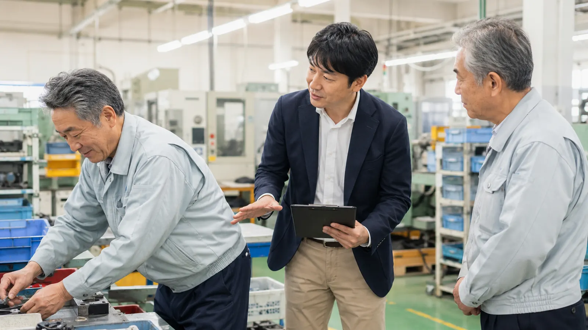

この記事の要点
- 重さの上限を決める：人力のみで扱う重量は、満18歳以上の男性で体重のおおむね40％以下、女性はその60％程度までが目安です。超える物は機械か2人以上で扱います。
- 作業台を体に合わせる：立ち作業の作業台は、肘の曲げ角度がおよそ90度になる高さにします。
- 立ちっぱなしを区切る：おおむね1時間に1、2回の小休止を入れ、座れる椅子やクッション性のあるマット、冬の足もとの冷え対策を用意します。
- 健康管理と教育を続ける：重量物を常時扱う人には、配置時と6か月以内ごとに1回の腰痛の健康診断と、ストレッチを中心とした腰痛予防体操の機会を用意します。
この記事が役立つ方
- 工場の従業員から腰痛の訴えが出ていて、どこから見直せばよいか迷っている総務・安全衛生の担当者の方
- 部品・製品の運搬や箱詰め、ライン作業など、重量物や長時間の立ち作業がある製造現場の管理者の方
- 衛生管理者・安全衛生推進者として、腰痛予防を安全衛生計画に組み込みたい方
製造業で腰痛予防に取り組む理由
厚生労働省・都道府県労働局・労働基準監督署の製造業向けリーフレット「製造業の事業者の皆さまへ 重量物取扱いなどによる腰痛を予防しましょう」では、製造業では労働災害としての腰痛で、毎年600〜900人が4日以上休業していると紹介されています。重量物の持ち上げや運搬、前かがみやひねりを伴う作業、長時間の立ち作業が重なりやすいことが背景にあります。
北海道労働局の「北海道における労働災害発生状況（令和8年6月末現在）」（速報値）では、道内の休業4日以上の死傷者2,997人のうち製造業が466人（15.5％）でした。事故の型別（全業種）では「転倒」が1,120人（37.4％）で最も多く、腰痛などにつながる「動作の反動、無理な動作」が315人（10.5％）でした。工場では、腰への負担と、床や通路での転倒の両方を見直すことが大切です。
対策の基本となるのは、厚生労働省の「職場における腰痛予防対策指針及び解説」（平成25年6月改訂）です。指針は、作業管理・作業環境管理・健康管理・労働衛生教育を組み合わせ、作業ごとにリスクを見積もって対策を決める進め方を示しており、別紙で重量物取扱い作業と立ち作業の対策を具体的に挙げています。
人力で持ってよい重さに、目安はありますか？
あります。指針では、満18歳以上の男性が人力のみで取り扱う物の重量は、体重のおおむね40％以下となるように努めることとされています。女性は、男性が取り扱える重量の60％位まで（製造業向けリーフレットでは体重の24％以下）が目安です。リーフレットでは、製造業では10kg程度に設定する例も見られると紹介されています。目安を超える重量を扱う場合は、2人以上で行うよう努め、負担が偏らないようにします。
| 作業者の例 | 考え方 | 目安 |
|---|---|---|
| 体重70kgの男性 | 体重のおおむね40％以下 | 約28kg以下 |
| 体重60kgの男性 | 体重のおおむね40％以下 | 約24kg以下 |
| 体重50kgの女性 | 男性の目安の60％程度（体重の24％以下） | 約12kg以下 |
この数値は「ここまでなら安全」という保証ではなく、上限の目安です。持ち上げる回数や高さ、距離、荷の持ちやすさによって負担は変わります。現場では、一人ひとりの体重で管理するよりも、職場として「人力で扱うのは○kgまで」と決め、部品箱や製品の荷姿をその重さ以下にそろえるほうが運用しやすくなります。
重量物の作業は、何から見直せばよいですか？
指針と製造業向けリーフレットでは、人の注意や持ち上げ方の工夫より先に、作業そのものを機械や道具に置きかえることが挙げられています。現場を回るときのチェックリストとして使えます。
- リフターや自動搬送装置、台車・二輪台車などで、人が持ち上げる・運ぶ回数そのものを減らしているか
- 床から直接持ち上げる置き方になっていないか。適切な高さの作業台や棚を使い、腰をかがめる作業をなくしているか
- 床から持ち上げる場合は、片足を少し前に出し、膝を曲げ、腰を十分に降ろして荷物をかかえ、膝を伸ばして立ち上がる方法を教えているか
- 作業対象にできるだけ体を近づけて扱える配置になっているか
- 目安を超える重量を扱う作業を洗い出し、機械化や2人作業、荷姿の変更を検討しているか
「持ち上げ方のコツ」の研修だけで終わらせず、置き場所の高さや台車の配置といった作業環境とセットで変えることがポイントです。
立ち作業では、作業台の高さや休憩をどう決めればよいですか？
組立や検査、包装などの立ち作業について、指針（別紙「作業態様別の対策」）では次のような対策が示されています。
| 項目 | 指針の目安・考え方 | 現場での確認例 |
|---|---|---|
| 作業台の高さ | 肘の曲げ角度がおよそ90度になる高さ。作業機器や作業台は作業者の体格を考えて配置する | 背の高い人が前かがみ、背の低い人が肩を上げて作業していないか |
| 椅子 | 座面の高い椅子等を置き、立位に加えて座っても作業できるようにする。背当て付きが望ましい | 立ったまま行う必要がない工程に、腰掛けられる場所があるか |
| 作業の組み合わせ | 長時間立ったままの作業を避けるため、他の作業を組み合わせる | 同じ工程に長時間固定される人がいないか |
| 小休止 | おおむね1時間につき1、2回程度の小休止・休息を取り、下肢の屈伸運動やマッサージ等を行う | ラインの都合で休止が取りにくい人がいないか |
| 床・靴 | 床面が硬い場合は、クッション性のある作業靴やマットで衝撃を緩和する | コンクリート床に長時間立つ場所にマットがあるか |
| 足もとの温度 | 寒冷下では筋が緊張しやすいため、冬期は足もとの温度に配慮する | 出入口近くや床が冷える場所の作業者に冷え対策があるか |
北海道の工場や倉庫では、これからの時期は床や出入口付近が冷えやすくなります。暖房の届き方や防寒の作業靴、マットの使い方を冬の前に確認しておくとよいでしょう。冬の通路や駐車場での転倒対策は、北海道の冬の転倒災害を防ぐ方法を解説した記事で紹介しています。
健康診断や体操は、何を用意すればよいですか？
指針では、重量物取扱い作業など腰に著しい負担のかかる作業に常時従事する労働者に対して、その作業に配置する際と、その後6か月以内ごとに1回、医師による腰痛の健康診断を実施することとされています。あわせて、ストレッチを中心とした腰痛予防体操を実施させることも示されています。
- 重量物を常時扱う工程と、その工程に従事する人を一覧にする
- 配置時と6か月以内ごとの腰痛の健康診断の時期を、年間の安全衛生計画に入れる
- 始業時や休憩時に行う体操の時間を決め、管理職が一緒に行う
- 健康診断の結果や従業員の訴えを、作業方法や配置の見直しにつなげる
自社の対象者や健康診断の実施方法は、産業医や健康診断の実施機関、所轄の労働基準監督署にご確認ください。痛みが強いときやしびれがあるときは体操を無理に行わず、医療機関への相談を勧めてください。
社内では、どんな順番で進めればよいですか？
製造業向けリーフレットでは、事業場のトップが腰痛予防に取り組む方針を表明し、衛生管理者や安全衛生推進者を中心に対策を実施する体制をつくることが勧められています。下の表は、社内で進める流れの例です。
| 段階 | やること | 担当の例 |
|---|---|---|
| 1. 方針と体制 | 経営者・工場長が腰痛予防に取り組む方針を示し、担当者を決める | 経営者、衛生管理者・安全衛生推進者 |
| 2. 作業の洗い出し | 重量物の取扱いと長時間の立ち作業がある工程を一覧にし、重さ・回数・姿勢・時間を記録する | 現場の管理者、安全衛生委員会 |
| 3. リスクの見積もり | 工程ごとに負担の大きさを見積もり、見直す順番を決める | 安全衛生委員会 |
| 4. 対策の実施 | 機械化・台車の配置、作業台の高さ調整、重量の上限の設定、小休止のルール化を行う | 生産技術、管理者 |
| 5. 教育と健康管理 | 持ち上げ方と体操の教育、腰痛の健康診断を実施する | 人事・総務、産業医 |
| 6. 振り返り | 半年〜1年ごとに訴えや休業の状況、対策の実施状況を確認し、次の計画に反映する | 安全衛生委員会 |
腰痛対策全体の始め方は職場の腰痛対策は何から始めるかを解説した記事、介護・運送など他業種との違いは業種別の腰痛・転倒予防の記事もあわせてご覧ください。
外部の専門家に依頼すると、何をしてもらえるか
プライズネス健康経営サポートでは、理学療法士が工場を訪問し、重量物の持ち上げや運搬、立ち作業の動作、作業台の高さ、床や通路の状態を確認したうえで、負担の大きい工程と見直しの優先順位を整理します。あわせて、持ち上げ方や休憩時に行えるストレッチを実技で学ぶ研修も行います。内容はサービス内容、費用の目安は料金プランでご確認いただけます（例：単発セミナー55,000円〜、職場訪問評価132,000円〜、定期サポート月額88,000円〜）。なお、本サービスは医療行為ではなく予防のための支援で、特定の成果をお約束するものではありません。
工場の作業に合わせた腰痛予防を、一緒に考えませんか
「腰痛の訴えはあるが、どの工程から手を付ければよいか分からない」「設備を入れる前に、作業の負担を専門家に見てほしい」という段階からご相談いただけます。まずは職場の腰痛リスクを3分でセルフチェックし、その結果をもとに無料相談をご利用ください。
よくある質問
製造業で、人力で持ってよい重さの目安はありますか？
厚生労働省の「職場における腰痛予防対策指針」では、満18歳以上の男性が人力のみで取り扱う物の重量は体重のおおむね40％以下となるように努め、女性は男性が取り扱える重量の60％位までとすることが示されています。製造業向けのリーフレットでは、女性は体重の24％以下とし、製造業では10kg程度に設定する例も見られると紹介されています。目安を超える物は、台車やリフターなどの機械を使うか、2人以上で扱うようにします。
立ち作業の作業台は、どのくらいの高さにすればよいですか？
腰痛予防対策指針では、立ち作業の作業台は肘の曲げ角度がおよそ90度になる高さとすることが示されています。作業台や機器は作業者の体格を考えて配置することとされているため、身長の違う作業者が同じ台を使う場合は、高さを調整できる台や足台で合わせる方法を検討します。
立ち作業の休憩は、どのくらいの頻度で取ればよいですか？
腰痛予防対策指針では、おおむね1時間につき1、2回程度の小休止・休息を取らせ、下肢の屈伸運動やマッサージなどを行わせることが望ましいとされています。長時間立ったままにならないよう、ほかの作業と組み合わせることや、座面の高い椅子を置いて座っても作業できるようにすることもあわせて検討します。
重量物を扱う従業員には、腰痛の健康診断が必要ですか？
腰痛予防対策指針では、重量物取扱い作業など腰に著しい負担のかかる作業に常時従事する労働者に対して、その作業に配置する際と、その後6か月以内ごとに1回、医師による腰痛の健康診断を実施することとされています。自社の対象者や実施方法は、産業医や健康診断の実施機関、所轄の労働基準監督署にご確認ください。
プライズネスに依頼すると、工場で何をしてもらえますか？
理学療法士が工場を訪問し、立ち作業や重量物の取扱いの動作、作業台の高さ、床や通路の状態を確認したうえで、負担の大きい作業と見直しの優先順位を整理します。持ち上げ方やストレッチの実技を含む研修も行います。費用の目安は単発セミナー55,000円〜、職場訪問評価132,000円〜、定期サポート月額88,000円〜です。医療行為ではない予防のための支援で、特定の成果をお約束するものではありません。痛みやしびれがある方には医療機関への相談をおすすめしています。
関連する記事
この記事は、公的機関などの公開資料をもとにAIを活用して作成しています。制度や数値は変わることがあるため、ご判断の際は出典の最新情報をご確認ください。医療上の判断が必要な症状については医療機関にご相談ください。
出典・参考：
厚生労働省「職場における腰痛予防対策指針及び解説」（平成25年6月18日 基発0618第1号、愛知労働局掲載）
厚生労働省・都道府県労働局・労働基準監督署「『職場における腰痛予防対策指針』による予防のポイント」（滋賀労働局掲載）
厚生労働省・都道府県労働局・労働基準監督署「製造業の事業者の皆さまへ 重量物取扱いなどによる腰痛を予防しましょう」（神奈川労働局掲載）
北海道労働局 安全課「北海道における労働災害発生状況」（令和8年6月末現在・速報値、令和8年7月8日）
（いずれも2026年11月6日確認）